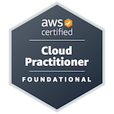

Prashant Sharma
Summary
- I am a software developer with 11 years of experience in product development
- Certified AWS Cloud Practitioner
- Recognized as an excellent team player and leader for handling new modules
- Experienced in international collaboration, having traveled to Korea, Poland and France for co-work
- Published 3 patents :- US11372724B2 ,
WO2021101192A1 ,
US20200304574A1
Experience
Aug 2021 - Feb 2023
Lead Engineer, Blue Yonder
Blue Yonder is the world leader in digital supply chain and omni-channel commerce fulfillment.
- Developed a new feature enabling clients to perform incremental planning on top of the base supply chain plan created by our solvers.
- Ensured product stability for multi-user scenarios and improved performance.
- Created a test suite to measure performance and identify runtime issues in multi-user scenarios, resulting in bug fixes and performance enhancements.
- Deployed and debugged code on Azure.
- Utilized Agile methodology with daily scrums, Kanban board on JIRA, Git for code versioning, and Maven as the build tool.
- Tech stack: Java 8, Oracle DB, REST APIs, Kafka, Spring Framework, Hibernate, Tomcat, Azure.
Apr 2015 - Aug 2021
Lead Engineer, Samsung Electronics
Strategized the roadmap for implementing and delivering the Samsung Pass module for Samsung mobile phones worldwide.
- Led a 5-member team, mentored employees, and provided optimal solutions to critical problems.
- Effectively performed code review and code refactoring to improve code quality and performance.
- Efficient coordination with multiple stake holders like project manager, testing group, release team.
- Reviewed and updated technical documents for releases.
- Effectively communicated with cross-functional teams, vendors, and senior leadership globally.
- Supported server teams, gaining experience with the Spring Framework.
- Tech stack: Android, Java, Spring Framework, REST, MySQL DB, Gradle, Git, Perforce.
Jul 2011 - Mar 2015
Lead Engineer, Samsung Electronics
Developed Messages software for Samsung phones on multiple models.
- Developed critical features like IMEI Tracker, Ultra Power Saving Mode, SOS, One Cloud.
- Collaborated with global development and testing teams to implement innovative features.
- Worked on Samsung proprietary platforms: SGP, MMP, and Tizen.
Education
2007-2011
BACHELOR IN TECHNOLOGY, UPTU (WES CERTIFIED)
B.Tech in Information technology from Uttar Pradesh Technical University (UPTU) with 7 GPA
Certifications

Skills
- Backend: Java8, Spring MVC, Spring Boot, Hibernate
- Frontend: HTML 5, CSS, JavaScript
- Middle Layer: REST, Kafka
- Multi-Threading,Collections,Design Patterns,Data Structure,Algorithms
- Version Control: Git, Perforce
- Relational DB: Oracle, MySQL
- Tools: Jira, Ecllipse, IntelliJ, Atom, Visual Studio
- JavaProfiler: YourKit
- Cloud: Azure, AWS
- Build tools: Maven, Gradle